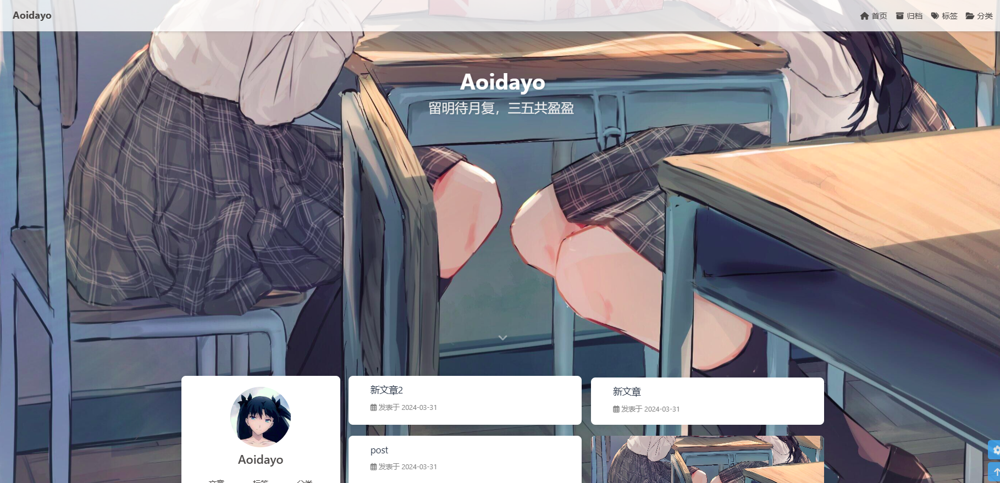

Hello Hexo,hello butterfly!自己的相关配置和参考
Pre
前言：
记录于2024/3/31
花了一个上午和一个晚上配置，去掉了一些自己不喜欢的东西，喜欢的东西由于能力限制也没能加上(╯﹏╰)
这个页面我是部署在github上面的，gitee没有自动部署，cnblogs会被自动检索到，我只是想写给自己看，所以就选择使用github pages了。
开始
（1）本地安装hexo及butterfly
（2）github上创建同名仓库
注意，这个仓库最好再建立一个branch专门存放本地包含所有依赖的文件夹，一个main branch专门存放部署的文件夹。
我的分支是
- main
- 部署的文件夹，
_config.yml中配置的deploy分支
- 部署的文件夹，
- hexo
- 包含所有依赖的分支
参考：
多仓库管理hexo
- main
- branch
(11 封私信 / 8 条消息) 使用hexo，如果换了电脑怎么更新博客？ - 知乎 (zhihu.com)
每次写完之后最好同步仓库
2
3
git commit –m "xxxx"
git push
[!note]
hexo中因为包含hexo和butterfly两个项目，所以存在submodule，解决方法
（3）基本使用
3.1）将hexo的分支clone到本地后
1 | npm i |
tag和categories，这个其实还是我太熟悉，其实初始化一次就够了
（4）相关美化
4.1）一图流
一图流美化：我自己主要用的
这个的重点就在于头图是固定大小的透明图，然后设置页面图就可以成为一图流的形式
另外，如果post文章设置图片有两种方法
1 | top_img: false/path/transparent |
top_img设置false那么页面就会变成一图流
4.2）aside配置
我比较讨厌头像旋转，所以在butterfly的source中取消了
（5）图片配置
使用插件完成
这个插件有问题，github上有不少它的fix版本，实际上就是cd进去修改index文件即可
使用hexo new post post_name生成与文章同名的文件夹，然后图片路径使用./post_name/xxxx.jpg即可
一些参考
最后
大概就是长这样

本博客所有文章除特别声明外，均采用 CC BY-NC-SA 4.0 许可协议。转载请注明来自 Aoidayo！